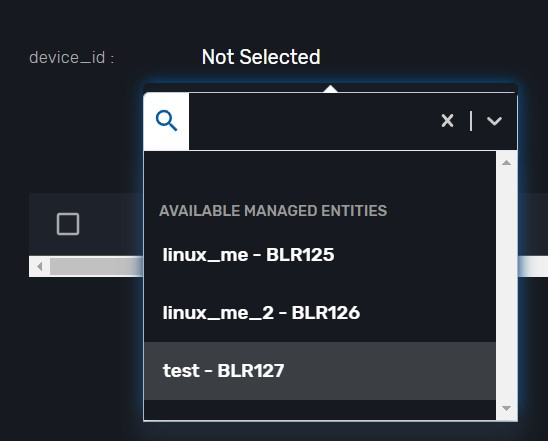

WF Sample
This section describe sample sorce code of WF.
contents:
- get some value from input menu in a task/not WF variables
- pass variables from task_a to task_b
- create new user to linux ME
- get user list from linux ME and create selectable user list (get user data inventory)
- get user from selectable user list
- WF call to other WF
Get some value from input menu in a task/not WF variables
For example, we get the input value menu. After that, print it went the task run successful.
Here is sample sorce code
from msa_sdk.variables import Variables
from msa_sdk.msa_api import MSA_API
dev_var = Variables()
dev_var.add('A', var_type='Integer')
dev_var.add('B', var_type='Integer')
context = Variables.task_call(dev_var)
X = context['A']
Y = context['B']
Z = int(X) + int(Y)
context['C'] = Z
ret = MSA_API.process_content('ENDED', f'workflow initialized and ( X : {X}, Y: {Y})', context, True)
print(ret)
Debug the task:
Fill the input data

Run the task (task name is Task A) the task will show the input Variables A and B

Pass variables from task_a to task_b
In task_A we create the Variables name C and value is A + B.
Here is example code to show value C.
from msa_sdk.variables import Variables
from msa_sdk.msa_api import MSA_API
context = Variables.task_call()
Z = context['C']
ret = MSA_API.process_content('ENDED', f'value get( C : {Z})', context, True)
print(ret)
Degub the task:
Here is result after user input 2 VariablesA,B is 1 and 2.
the CVariables is A + B

Create new user to linux ME
Example code
import json
from msa_sdk.variables import Variables
from msa_sdk.msa_api import MSA_API
from msa_sdk.order import Order
# List all the parameters required by the task
dev_var = Variables()
dev_var.add('device_id', var_type='Device')
dev_var.add('user.0.comment', var_type='String')
dev_var.add('user.0.group_id', var_type='String')
dev_var.add('user.0.login', var_type='String')
dev_var.add('user.0.home_dir', var_type='String')
dev_var.add('user.0.object_id', var_type='String')
dev_var.add('user.0.password', var_type='String')
dev_var.add('user.0.shell', var_type='String')
dev_var.add('user.0.user_id', var_type='String')
context = Variables.task_call(dev_var)
# read the ID of the selected managed entity
device_id = context['device_id']
# extract the database ID
devicelongid = device_id[3:]
# build the Microservice JSON params
object_parameters = {}
object_parameters['user'] = {}
for v in context['user']:
object_parameters['user'][v['object_id']] = v
# call the CREATE for the specified MS for each device
order = Order(devicelongid)
order.command_execute('CREATE', object_parameters)
# convert dict object into json
content = json.loads(order.content)
# check if the response is OK
if order.response.ok:
ret = MSA_API.process_content('ENDED',
f'STATUS: {content["status"]}, \
MESSAGE: successfull',
context, True)
else:
ret = MSA_API.process_content('FAILED',
f'Import failed \
- {order.content}',
context, True)
print(ret)
Debug the task:
Chose the ME you want to create user 
Input the user profile
Then, click the run button

The new user create sussessful in ME

Get user list from linux ME and create selectable user list (get user data inventory)
Example code
import json
from msa_sdk.variables import Variables
from msa_sdk.msa_api import MSA_API
from msa_sdk.order import Order
# List all the parameters required by the task
dev_var = Variables()
dev_var.add('device_id', var_type='Device')
# dev_var.add('drop')
context = Variables.task_call(dev_var)
# read the ID of the selected managed entity
device_id = context['device_id']
# extract the database ID
devicelongid = device_id[3:]
# build the Microservice JSON params
object_parameters = {}
object_parameters['user'] = '0';
# call the CREATE for the specified MS for each device
order = Order(devicelongid)
order.command_execute('IMPORT', object_parameters)
# convert dict object into json
content = json.loads(order.content)
hi = []
for i in json.loads(content['message'])['user']:
h = {"user_id" : json.loads(content['message'])['user'][''+str(i)+'']['user_id'],
"password" : json.loads(content['message'])['user'][''+str(i)+'']['password'],
"object_id" : i
}
hi.append(h)
context['list'] = hi
# check if the response is OK
if order.response.ok:
ret = MSA_API.process_content('ENDED',
f'STATUS: {content["status"]}, \
MESSAGE: successfull',
context, True)
else:
ret = MSA_API.process_content('FAILED',
f'Import failed \
- {order.content}',
context, True)
print(ret)
Debug the task
get user from selectable user list
WF call to other WF
Describe: One WF calls to another WF has the task of ping to IP address
Example code WF ping IP address
from msa_sdk.variables import Variables
from msa_sdk.msa_api import MSA_API
from msa_sdk.device import Device
from msa_sdk import util
import json
dev_var = Variables()
dev_var.add('addresses.0.ip')
# dev_var.add('addresses.0.status')
context = Variables.task_call(dev_var)
# get the current process id, useful for logging message to the process log file
process_id = context['SERVICEINSTANCEID']
# create a new variable Device to use the sdk function msa_sdk/device.html#msa_sdk.device.Device.ping
device = Device()
# get the list of IP addresses registered in the UI
# context['addresses'] contains the values entered for the array of variables "addresses"
addresses = context['addresses']
# for each IP addresses
i=0
for address in addresses:
ip = address['ip']
# call the ping function with the IP
# the ping function will call a function implemented in the CoreEngine: the ping will be done from the container msa_sms
ping_result = device.ping(ip)
# log the result in the log file process-xx.log
util.log_to_process_file(process_id, ping_result)
# get the JSON result as a Python object
ping_result_json = json.loads(ping_result)
# update the addresses with the ping status
num = len(context['addresses'])
context['addresses'][i] = {}
context['addresses'][i]['ip'] = ip
try:
context['addresses'][i]['status'] = ping_result_json['status']
except:
context['addresses'][i]['status'] = 'not working'
i += 1
if context['addresses'][0]['status'] == 'OK':
# prepare the exit status of the task
ret = MSA_API.process_content('ENDED', 'IP addresses {} is {}'.format(context['addresses'][0]['ip'],context['addresses'][0]['status']), context, True)
else:
ret = MSA_API.process_content('ENDED', 'IP addresses {} is {}'.format(context['addresses'][0]['ip'], context['addresses'][0]['status']), context, True)
print(ret)
Debug the task:
Input IP address

Run the task and see some information.


Attention to important information:
UBIQUBEID: BLRA6 ~ It means the id of the subtenant
PROCESSINSTANCEID: 402
Done running a WF instance
Example code WF call WF instance:
get some info from the previous WF:

SERVICE_NAME : Process/workflows/Ping_IP/Ping_IP
PROCESS_NAME : Process/workflows/Ping_IP/Create
subtenant_inventory_id : BLRA6
process_id : 402
from msa_sdk.variables import Variables
from msa_sdk.msa_api import MSA_API
from msa_sdk.orchestration import Orchestration
import re
import json
import time
from msa_sdk import constants
dev_var = Variables()
dev_var.add('subtenant_inventory_id')
dev_var.add('SERVICE_NAME')
dev_var.add('PROCESS_NAME')
dev_var.add('process_id')
context = Variables.task_call(dev_var)
def get_process_instance(orch,process_id,timeout=600, interval=5):
response = {}
global_timeout = time.time() + timeout
orch.get_process_instance(process_id)
response = json.loads(orch.content)
status = response.get('status').get('status')
return response
ubiqube_id = context['subtenant_inventory_id']
# define class for call WF with same subtenant
orch = Orchestration(ubiqube_id)
orch.list_service_instances()
response_list_instance = json.loads(orch.content)
context['result_orch'] = response_list_instance
# context['sel_wf'] = 98
b=False
if len(response_list_instance) !=0:
for list_instance in response_list_instance:
# if int(list_instance['id'])==int(context['sel_wf'].get('instance_id')):
if int(list_instance['id'])==98:
b=True
break
context['instance_found']=b
if context['instance_found']==False:
MSA_API.task_success('Instance not found (already deleted), skipping'. context, True)
SERVICE_NAME = context['SERVICE_NAME']
PROCESS_NAME = context['PROCESS_NAME']
process_id = context['process_id']
responce=get_process_instance(orch,process_id)
context['result3'] = responce
# regex=r"New IP(.*)has"
# matches=re.search(regex.details)
# context['underlay_subnet_ip']=matches.group(1)
ret = MSA_API.process_content('ENDED', 'Task call wf is working', context, True)
print(ret)
Run process


We got information of the previous WF:
"details": "IP addresses 8.8.8.8 is OK"
Done.